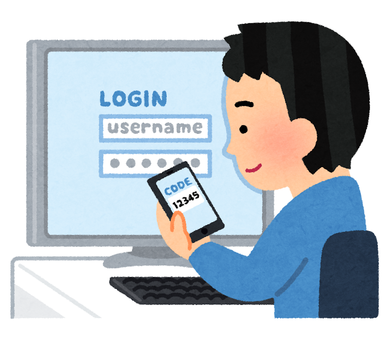
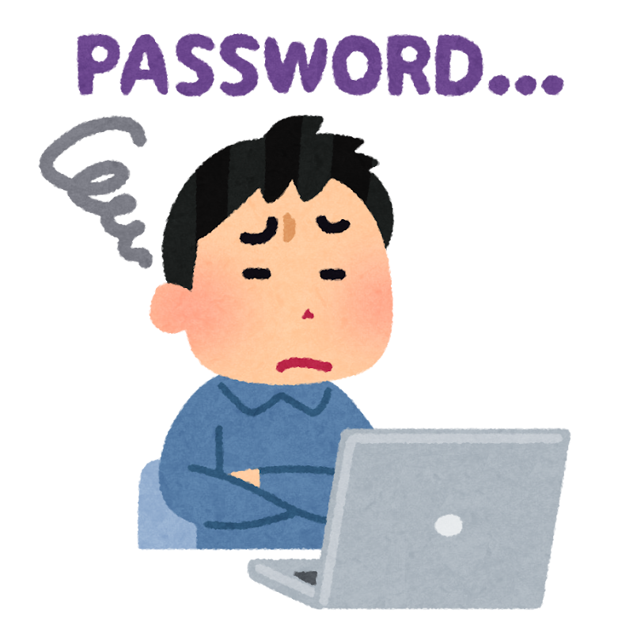
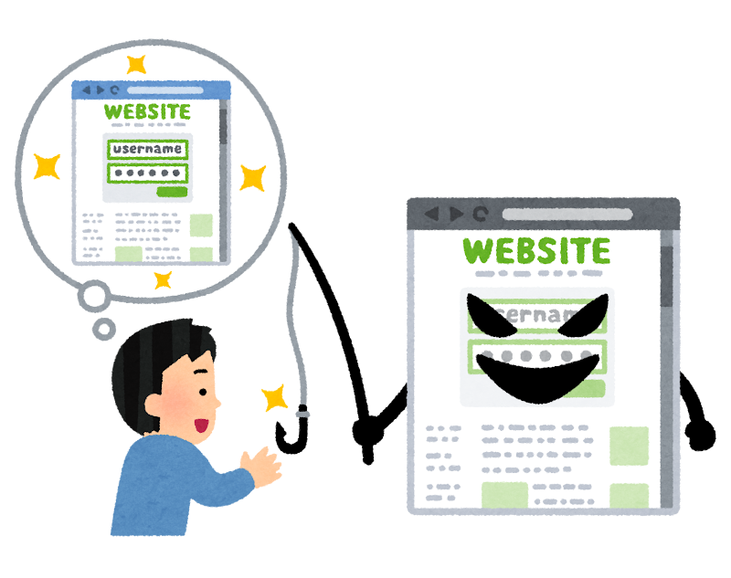

ネットを安心して使うために
最終更新日：
困る前に、できることを一つずつ。
メールや銀行、カード会社のサービスを使うときは、アカウントにログインします。アカウントとは、そのサービスで自分を他の利用者と区別し、自分の情報や設定を保存して使うための登録です。
ここではGmail、銀行、カード会社を例に、パスワードから2段階認証、入れなくなったときの備えへと、順に考えます。設定は基本的にアカウントごとに確認しましょう。
困る前に確認したい5つのこと
-
パスワードを使い回さず、管理する
ログインには、本人を確かめるためにパスワードが使われることが多くあります。同じパスワードを使い回すと、一つが漏れたときに、他のサービスにも不正に入られるおそれがあります。
Gmail、銀行、カード会社などで、それぞれ異なる、長く推測されにくいパスワードを使いましょう。ただ、使うサービスが増えると、安全なパスワードを一つずつ作り、すべて覚えておくのは現実的ではありません。
全部を自分で覚えようとせず、道具に手伝ってもらいましょう。パスワードマネージャーは、パスワードの作成・保存・入力を助ける道具です。
使い始める例：Chrome
Windows・iPhone・AndroidのChromeでは、Google パスワード マネージャーを利用できます。ChromeにGoogleアカウントでログインし、公式サイトで新しいパスワードを作るときに、提案されたものを使えます。保存の確認が出たら「保存」を選びます。次回のログイン時には保存した情報を選んで使えます。
まずは一つのサービスから試しましょう。パスワードを変更した場合は、新しいものが保存されたか確認してください。既に別の管理ツールを使っている人が、すぐに移行する必要はありません。
Googleアカウントに保存する場合は、そのアカウントの2段階認証と復旧方法も確認し、端末の画面ロックを使いましょう。
Google：Windowsでの使い方 ／ iPhoneでの使い方 ／ Androidでの使い方
操作で迷ったら、端末名と「パスワードマネージャーの使い方を一画面ずつ教えて」とAIに聞く方法もあります。実際のパスワードは伝えません。
-
2段階認証で守りを重ねる

2段階認証は、ログイン時に本人を確かめる手順を重ねる仕組みです。例えば、パスワードを入力した後、自分のスマートフォンに届く認証コードを入力したり、登録したアプリで承認したりします。
パスワードを知っただけの相手は、本人のスマートフォンでの確認まではできません。このように、パスワードとは別の確認も必要にすることで、不正ログインを防ぎやすくなります。
設定は基本的にアカウントごとです。Gmailで使うGoogleアカウントに設定しても、銀行やカード会社のアカウントには自動では設定されません。それぞれの公式アプリや公式サイトで確認しましょう。
まずは、他のサービスのパスワード再設定にも使う普段のメールから。銀行やカード会社なども、利用できる確認方法を調べてみましょう。
Gmailや金融サービスの場合
GmailはGoogleアカウントを使います。Googleアカウントの「セキュリティとログイン」で、2段階認証を確認できます。ログインを求められることがあります。同じGoogleアカウントで使うGoogleのサービスには、そのアカウントの設定が適用されます。
銀行やカード会社では、確認方法は会社や利用場面によって異なります。ログイン時だけでなく、送金やネットでのカード決済の際に確認が求められることもあります。詳しくは各社の公式案内を確認しましょう。
「Googleアカウントでログイン」を使う他社のサービスでは、どのアカウントでログインしているかも確認しましょう。
設定項目が分からなければ、端末名とサービス名を伝え、「2段階認証の確認方法を教えて」とAIに聞いてみましょう。認証コードは伝えません。
-
入れなくなったときに備える

スマートフォンを紛失・交換して確認ができなくなる場合などに備え、各サービスの復旧方法を、ログインできるうちに確認しましょう。
特に普段使うメールは、他のサービスのパスワードを再設定するときにも使います。パスワードの整理が全部終わるのを待たずに、メールの2段階認証と復旧方法から確認しても大丈夫です。
Gmailの場合
Googleアカウントの「セキュリティとログイン」で、再設定用の電話番号やメールアドレスなどを確認します。ログインを求められることがあります。
スマートフォンを使えないときに利用できる方法も確認しましょう。再設定用メールを登録する場合は、普段使う別のメールアドレスを使います。別のメールを新たに作ることは必須ではありません。復旧用のコードを保存する場合は、他人に知られない安全な場所に保管しましょう。
銀行やカード会社についても、各社の公式案内で、ログインできないときの手続きを確認しておきましょう。
Google：復元オプションを設定する ／ Google：アカウントを復元する
備え方で迷ったら、「スマートフォンを使えないときに備えて、何を確認すればよい？」とAIに相談できます。復旧用のコードは伝えません。
-
急がせるメールに備える

ログインを求めるメールやSMSが届いても、そのリンクから進まず、普段の公式アプリや登録済みのブックマークから確認しましょう。
「急がせる」「心当たりがない」「リンク先で秘密の情報を入力させる」は、いったん止まる目安です。ただし、こうした特徴がなくても、本物とは限りません。
怪しいと感じる目安と、確かめ方
- 急がせる：「本日中に手続きしないと利用停止」などと、すぐに操作するよう迫る。
- 心当たりがない：使っていない銀行やカード会社からの連絡、覚えのない請求や当選のお知らせ。
- 秘密の情報を求める：リンク先でパスワード・暗証番号・認証コードなどの入力を求める。
差出人の名前・アドレス、会社のロゴ、自分の氏名、自然な日本語だけでは、本物と判断できません。アドレスの偽装や、漏えいした氏名の悪用もあり得ます。
メールの見た目で決めず、別の入口から確かめましょう。例えば銀行やカード会社の通知なら、メールを離れて普段の公式アプリを開き、お知らせや利用履歴を確認します。それだけで確かめられなければ、カードの裏面や正規のサイトに載っている窓口へ問い合わせます。メールに書かれた電話番号は使いません。
2段階認証を設定していても、偽サイトに認証コードを入力したり、心当たりのないログインをアプリで承認したりしないことが大切です。
迷うメールは、個人情報やリンクを除いた本文で、AIに怪しい点を整理してもらう方法もあります。AIが「問題なさそう」と答えても、本物の証明にはなりません。
-
連絡先と利用明細を確認しておく
普段使うカード会社や銀行・証券会社の連絡先を、カードの裏面や公式アプリ・正規のサイトで確認しておきましょう。まずは一つからで大丈夫です。
分からないときはAIに聞いてみる
AIは、操作の説明や怪しい点の整理を手伝う相談相手です。設定の正しさやメールの本物・偽物を保証するものではありません。
例えば、Windows・iPhone・AndroidのブラウザでGeminiを開き、質問を入力して送信します。ログインして会話を保存できる設定なら、後日続きを相談しやすくなります。
質問の例：「iPhoneでGmailを使っています。Googleアカウントの2段階認証と、入れなくなったときの復旧方法を確認したいです。一画面ずつ教えてください。」端末名をWindowsやAndroidに替えても使えます。
メールについての質問例：「次のメールにフィッシングを疑う点がありますか。本物と断定せず、安全な確認方法も教えてください。」リンクや添付ファイルは開かず、本文をコピーして、氏名・メールアドレス・電話番号・口座情報・認証コード・リンクなどを除いてから添えます。
パスワード・認証コード・口座情報などは、AIにも他人にも入力・共有しないでください。 AIの回答は間違うことがあるため、設定は公式案内で確認します。
知らない決済や取引を見つけた場合は、AIとの相談よりも、金融機関やサービスの公式窓口への連絡を優先してください。
AIへの接続と会話の保存について
Geminiの利用にはインターネット接続が必要です。ログインなしで使える機能もありますが、環境や機能によってログインが必要です。会話の保存や履歴の利用は設定によって異なります。
Googleアカウントに入れずAIを使えない場合もあるため、Googleの復元案内を直接確認する方法も覚えておきましょう。
困ったときは
- 知らない決済・送金・取引を見つけたら：カード会社や銀行・証券会社へ速やかに連絡し、利用停止など必要な対応を相談してください。連絡先は、不審なメールではなく、カード本体・公式アプリ・正規のサイトで確認します。
- ログインできない、勝手に使われている場合：サービスの公式サポートへ連絡してください。ログインできる場合はパスワードを変更し、使い回していたサービスも変更します。確認できる取引・ログイン履歴や連絡の記録は保存してください。
- 被害や不安を相談したい場合：警察庁の被害時の案内、IPA情報セキュリティ安心相談窓口を参照してください。被害がある場合は、まず金融機関やサービス提供会社への連絡を優先します。
一人で抱え込まないために
企業側の情報漏えいそのものは、個人の設定だけでは防ぎきれません。このページは、主に不正利用や詐欺などの二次被害を減らすための入口です。これらの備えですべてを防げるという意味ではありません。
被害に遭ったことを本人の不注意だけで片づけず、分からないことを確かめ合いましょう。ただし、同期生どうしやAIに相談するときは、パスワード・認証コード・口座情報などを共有しないでください。
出典・詳しい公式情報
公的資料とサービスの公式案内を参考に、同期会向けに要点を整理しました。放送映像・画面や個人の相談内容は掲載していません。サービスごとの最新の設定・手続きは、そのサービスの公式案内を確認してください。
- IPA：自分の個人情報等が漏えいした際の「対処」と「日頃の対策」（2026年10月26日公開）
- 警察庁：不正アクセス対策（2026年11月6日確認）
イラスト：いらすとや（二段階認証を使う人、パスワードを忘れた人、フィッシングサイト）。利用規定とよくあるご質問を確認し、本文の挿絵として使用しています（2026年11月8日確認）。画像の著作権はみふねたかしさんに帰属します。